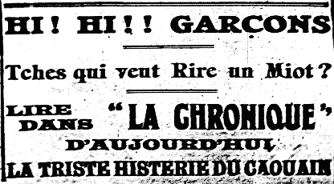

George William de Carteret - "Caouain"
(1869 - 4/9/1940)

George Williamme dé Cart'ret, né à St. Pièrre, 1869, fis George (1839) et Eliza Anne Le Feuvre - fis George Jean (1809), fis George (1779), fis Jean (1731), fis Jean (1695) . . . . décédé 1940.
Fèrmyi à St. Pièrre et pus tard Ségrétaithe dé l'Union des Fèrmièrs dé Jèrri. I' fut étout dans san temps lé Vîngt'nyi Militaithe pouor lé Ouêst d'l'Ile. Un raide bouon orateur, qué li, et un Jèrriais (auve les vièrs traits caractéristiques des Nouormands d's Îles) tchi n'avait pon d'peux dé s'n ombre. Il êcrivit eune mâsse d'articl'yes et d'vèrsets, la grand' partie souos l'nom d'plieunme du Cahouain pouor "Les Chroniques de Jersey" châque sanm'di. N'y'a pon 'couo tant d'années qu'nou ouiyait souvent les gens dithe comme ch'la, en d'visant l'dînmanche, "Av'ous liu l' 'Cahouain' chutte sémaine?", ou " Crai-tu qu'lé 'Cahouain' 'tait bouon hièr!" ou acouo, "Ch'est seux qué l' 'Cahouain' n'n'étha un bouon but entouor ch'la sanm'di!"
Un r'citeux et comédien dé toute preunmié clâsse, George W. d'Cart'ret d'visait un fanmeux Jèrriais d'St. Pièrre tch'était raide pliaîsant à ouï. Nou s'rappelle dé li partitchuliéthement justément d'vant la dreine dgèrre, quand i' s'mouontrait raconteux par excellence à des séthées bein heûtheuses qué nou-s-avait ensembl'ye, et étout quand un fliotchet d'nous j'fînmes viage à Chèrbourg, à l'învitâtion d'La Société Alfred Rossel. Dé nouos jours nou-s-appell'lait chu pâssé - les bouons vièrs temps, véthe, les bouons vièrs temps!

Né v'chîn deux'trais lingnes êcrites à sa mémouaithe en 1940 :
" . . . . . il est bouon d'saver qué jusqu'au drein i' pathaissait aussi frais comme tréjous-d'bouonne heumeu, lé r'gard cliai, la fache êpannie et hardi pliaisant à êcouter, Jé fus l'vaie pas longtemps d'vant tch'i' mouothisse et j'vouos asseûthe tch'i' m'pathut comme dé tout temps-l'emblième dé l'intelligence, et d'caractéthe èrmerquabl'ye.
"Il 'tait d'un esprit mèrveilleux, grand penseux et grand raconteux, possédant eune înmaginnâtion raide capabl'ye et l'întellect d'un savant. Il aimait faithe les gens rithe ; il 'tait tréjous prêt à entanmer l'risibl'ye pouor faithe pliaîsi ès cheins tchi l'êcoutaient.
"Nou l'èrgrett'ta, mais nou pens'sa en li souvent en liêsant et en r'citant ses pièches et sa poêsie, et pouor nous tchi l'avons connu i' restétha dans not' souvenin comme un Jèrriais d'la preunmié trempe et un bouon vièr corps.
"A la préchaine, Cahouain, nou t'èrvèrra tchique jour!"



- Achteu que l'élection pouor Juge est passée (1922)
- L'affaithe a touânné justement comme je m'attendais (1914)
- Affaithes dé Finance
- Au "Show" des bêtes (1919)
- L'autre Dimanche, il y r'eut oquo un rassembliément de ches machines-là (1914)
- Aux armes, citoyens! (1914)
- L'aut'e jour, quand l'Chef fit la béveuthe (1921)
- L'autre jour, une Missis d'une paraisse d'amont (1927)
- Achteu que l'élection dans la paraisse de St. Jean est passée (1923)
- Achteu qu'il n'y a pu de titherie (1927)
- L'autre jour j'tais jutchie sus l'desk au Boss (1920)
- L'autre jour j'tais sus le bridge (1920)
- Ah, mes bouannes gens, je n'sai' pon de tchi bord de donner des ailes (1910)
- Ah ! garçons, le pouor' caouan a-t-i' bein fait de resté muchi (1910)
- La bataille de la Somme (1916)
- Lé Bélengi (1921)
- Lé “best man” ès neuches (1920)
- Blanche Lêcaudey et san Costume de Carnaval
- La bordèe du carnaval (1909)
- Le boss me dit l'aoutre jour l'arlevée: I faout que tu faiche tchique chôse pour l'Almonas
- L'boss veut une colonne de ton gnollin (1927)
- Les bourdons d'Jèrri (1920)
- Bouannes gens, chés mé qu'est content! (1910)
- Bouannes gens, me v'chin ervenu (1910)
- Les boxeurs (1922)
- Bravo! bravo pour la pâraisse de la Trinitèt
- L'buanhomme Caouain n'est pon bé touot chu temps (1923)
- L'buanhomme est comme un satan (1920)
- Le caouan a tèt ichin, le caouan a tèt là (1910)
- Le "caouan" est allé à Caen (1910)
- Chutte affaithe ichin s'passi, il y a tchicques s'maines (1936)
- Couomme nous sait, il y a hardi de docteus (1928)
- Ch'a tréjous 'té l'habitude du Caouain le Samedi d'Noué (1939)
- Ch'ést des tremblyements d'terre! (1927)
- Couomme j'voulais en saver un p'tit pus long sus ch'est jeunes vagabonds (1927)
- La Coupe Florio 1927 (1927)
- Couomme bé d'autres, j'ai ieu une suée d'fraid (1923)
- Ch'n'est pon des sornettes que j'vais vos raconter (1923)
- Le Chef me dit l'aut'e jour (1925)
- Chein que vos raconti le Sieur Caouain dans la gazette de Samedi (1927)
- Le Chef se permins l'aut'e jour, de faithe des r'merques à m'n êgard (1923)
- Le câblye est rompu! (1915)
- Lé Caouain à Noué 1923
- Lé Caouain à Noué 1928 (1928)
- Lé Caouain à Noué 1935
- Lé Caouain à la Chambre des Débats (1915)
- Lé Caouain a un holiday ès Ecréhos (1921)
- Lé Caouain au lanchon (1914)
- Lé Caouain au Nouvel An (1924)
- L'Caouain comme candidat pour Juge (1931)
- Lé Caouain ès Shows d'Boeus (1923)
- Lé Caouain et Father Christmas (1931)
- Caouain et la Bataille de Flieurs (1914)
- Lé Caouain et la “cash-box” (1922)
- Lé Caouain et la margarine (1915)
- Lé Caouain et la grippe en 1918
- Caouain et la pétrole (1916)
- Lé Caouain et la tonnelle (1929)
- Lé Caouain et l'brancage (1922)
- Lé Caouain et l'êlection mantchie d'eune femme (1923)
- Lé Caouain et les bains (1922)
- Lé Caouain et les patates (1922)
- Caouain et les prisonnièrs Allemands (1915)
- Caouain et les siex belles filles exhibées à Springfield (1934)
- Lé Caouain et l'football (1921)
- Lé Caouain et l'griffon (1915)
- Lé Caouain et l'Irish Sweep (1931)
- Lé Caouain et l'nièr beurre (1911)
- Lé Caouain, la dgèrre et l'Eisteddfod (1922)
- Lé Caouain n'est pon grôssi (1921)
- Lé Caouain porte les braies (1930)
- Lé Caouain et les cliochièrs (1926)
- Caouain et les hommes du gaz en grève (1921)
- Caouain pendu (1911)
- Le Caouain va au Hunt
- Lé Caouain va au lanchon (1913)
- Caouain et Victor Hugo (1914)
- Ch'est mé qu'a hérité d'la job d'écrithe de mon gnollin (1932)
- Ch'tait Mardi passé qu'était l'grand jour, garçons (1913)
- Du chucre pour faithe de la g'lee (1918)
- Chutte histouèthe du vièr Turc qu'avait douze femmes (1916)
- Chutte puorre Marie Hibou a une vilaine suée de fraid (1920)
- Chutte semaine, garçons, y disent qui faut que j'taise ma bec faute d'espace (1908)
- Cliément d'Caen va au lanchon
- Des collectes (1922)
- Colorado Beetle (1938)
- Collibets (1914)
- Comment qu'Bertie fut Exempté
- Contradiction
- Les cô's d'la Mouaie (1934)
- Ès courses
- Dans la nièth de Lundi à Mardi (1912)
- Dans la pâraisse de man biau cliochi (1912)
- Déception
- La Dêfaite d'un Colosse (1936)
- Les Députations
- La djerre était dêcliathée (1914)
- Une douzaine d'oeufs (1929)
- Le discours prononcé par Sir Arthur Keith l'aut'e jour (1927)
- D'pis qu'ils ont amarré la statue du rouai Doré (1909)
- Duthant les dernié treis s'maines (1923)
- Ès Courses (1923)
- L'Ebranlement d'Betsy (1927)
- Eh bein, garçons, chute semaine j'ai une histouaithe à vos raconter (1914)
- Eisteddfod 1926
- Êlus sans opposition (1915)
- L'Embarras du Chouaix
- Est-che une Dame ou un Moussieu? (1933)
- En Jerri, il n'y a rein de dithèt qu'une élection pouor éclairer les gens! (1929)
- Ervelà les "shows" erquémenchis (1913)
- Espions Allemands (1914)
- Ertroussez vos manches de qu'minse garçons (1914)
- L'èrtou du Bailli et la dgèrre (1914)
- L'exhibition de tchuthiosités (1915)
- Des farces dans la chapelle (1930)
- La fête au mougni (1922)
- Des flieurs (1939)
- La fête au mounièth d'la Trinité (1923)
- L'Frainque de Vinchelez en fit des sous avec sa djingue de ch'vaux (1920)
- Flippe Grouaîsille
- Un Football Match (1922)
- Une game de football (1925)
- Le grand sabre au kaiser (1914)
- "Here's Father Christmas!" (1915)
- Hi! hi! garçons du Bouoley (1908)
- Honni soit qui mal y pense (1920)
- L'Hospitalité
- I' semblle que j'ai rajeuni ch't'hivé (1910)
- I' faut que j'vos raconte une aventuthe (1936)
- L'impôt sur le r'venu (1928)
- I' y'a tchique temps j'avais ouï deux vaisins (1910)
- I' faout sonné la pële et les bachins, se fit un marchand de viaux (1910)
- Il y a quasiment deux mais que j'alli à chutte bordèe de nièrthe beurre (1920)
- I' faut qu'on preniez de l'ieau caude avec vot'e whisky (1922)
- I'y a des gens qu'ont une telle confiance (1936)
- I' yavait quatre John qu'éthaient aimèt la 'job' (1911)
- J'avons en Jerri un tas de gens pourtchi notre vièrr patois est un galimatias (1926)
- "Je le veux" (1913)
- Je n'peux pas vos en êcrithe bain long chute semaine... (1912)
- Je r'sis hors du Dispensaithe (1916)
- Je voudrais saver, mé (1917)
- J'étais malade par aver mangi du stoffing (1912)
- J'n'sais pon tchi sorte d'Noué que vous avez passé, buannes gens (1932)
- Un journaliste, péthe de famille (1918)
- J'vo's avais dit à bétôt
- Lé Juge et sa bike (1920)
- J'sis bein aise de saver qu'nous n'en a pon encouorre fini avec chutte triste famille des Enfuntchis (1927)
- J'criyais d'avèr un holiday (1927)
- Je pense bain, garçons qu'ous êtes tous bain tchuthieux (1920)
- J'sis un bein vilain ouêsé (1909)
- Je sis certain, mes chiers lecteurs, qu'ou d'vez tous être bain enniés (1923)
- Je sis à êcrithe ch't articlye ichin dans la solitude de ma mansarde (1927)
- Jusqu'acheteu, j'avais tréjous ieu le pus grand respé pour Messieux les membres des Etats (1920)
- Le jour qui y-avait tant de bliaze que nou pouvaient pas quasiment vais (1910)
- Un jour, il y a tchiques temps, j'tais du bord de siez Mac (1910)
- "Land Army" (1918)
- A Leap Year Proposal
- Londres (1938)
- "Looper the loop" (1927)
- Ma Motor-Bike
- Ma p'tite bordée! (1909)
- Ma p'tite poupette
- Madame La Mode
- Maît'e Dan Lêcaudey est quâsi fo (1923)
- Marie Hibou est diversement désappointée (1933)
- Marie Hibou et l'litcheu (1915)
- Les Messieurs de la Cour ont décidé d'avèr l'election un Vendredi (1922)
- Madame L'Election (1913)
- Mé, qui n'a pas ieu un seule Christmas-box (1910)
- La modestie m'empêche... (1914)
- Mort de mes os, le pouore caouan est triste (1909)
- La Mort d'Élie (1918)
- M'v'chein encouore une fais à baillyr de ma becque (1920)
- Mait'e Cliément d'Caen est bain dêterminé de jamais n'craître d'aut'es tomates (1927)
- Mait'e Charles Meudron est bain décidé de jamais ne r'craître d'tomates (1920)
- Maît'e Cliément d'Caen était à s'rêjoui l'aut'e jour que la "strike" était finie (1920)
- Mes bouannes gens, tchi tintamârre dans la pâraisse du bouan bergé (1910)
- Mardi au sé, j'tais jutchie sus ieun des trais bouais (1923)
- Maît'e Cliément d'Caen et l'wireless (1927)
- Mé v'là r'venu d'unne touannaie (1910)
- Mais où-est chu boustre d'caouan là va pêtchi toutes ses nouvelles? (1910)
- Les Neuches (1930)
- Le Nid
- Nos v'là dans l'embarras avec Marie Hibou (1939)
- Nos r'vélo touos tchulbutés siez-nous! (1928)
- Nos r'velà grés de deux bouans Chantn'iers pour treis ans d'pus (1926)
- N'v'la donc les élections terminées (1925)
- Nou dit qu'il en affole à tout âge (1925)
- Noué 1920
- Nouvelles de la djerre (1914)
- Nueux pids à marchi sus la terre (1915)
- N'v'la encoure une fais la saison des shows passée (1923)
- Ou vos r'souvenèz bein qui y-a tchique temps (1910)
- Ou z'allez être désappointès, mais pas pus qu'mé (1917)
- Les Pains et la pliant'tie (1917)
- Paisson d'Avri (1931)
- Les Pêquethies d'la Côte (1928)
- Poésie sur quatre fleurs
- Pour la treîzime et dernièthe leçon à l'entou dé la bordèe d'êlection à St. Ou (1911)
- Pour Vos Amuser (1924)
- Pour Vos Amuser (1924)
- Pour Vos Amuser (1924)
- Pour Vos Amuser
- Pour vos amuser (1926)
- Pour vos amuser (1926)
- Pour vos amuser (1920)
- Pour vos amuser (1920)
- Pour vos amuser (1920)
- Pour vos amuser (1920)
- Pour vos amuser (1920)
- Un projet de Louai permettant ès Inspecteurs des C'mins de siégi et d'voter (1921)
- P'tits cadeaux!!! (1919)
- La pêque (1910)
- Pourtchi que le "caouan" l'appelle "By Jim" (1910)
- Pour vos dithe vrai (1910)
- Puisque les mousses n'ont pas occuo peut m'aveughi avec les cracots (1909)
- Quant à lever la patte pouor ne dithe que la pure, plieine et entièthe vérithèt (1927)
- Quant chès l'temps des députations (1923)
- Quand Maît'e Cliément d'Caen vînt hier cherchi s'n Almonas (1938)
- Quand j'tchit'tai l'ecole
- Quand tchi que l'Caouain s'en va passer d'vant l'Tribunal? (1917)
- "Recruiting Rally" (1915)
- Reproches Maritales
- Le Rouleux de St. Louothains (1916)
- Samedi passé, comme je prenais un p'tit somme opprès dîner (1916)
- La séance de la Cour pour les menues dettes (1916)
- Si nou d'mande ès St. Ouennais si y-a du nouvé dans lus pâraisse (1914)
- Snatcher and Peelem's Potato Eradicator (1915)
- Les Sports (1926)
- Sugar Cards (1918)
- Si ch'est qu'ou voulez ouï du langage (1920)
- Le sujet d'conversation ches jours ichin a 'té la frumethie du "Bridge" (1920)
- Si Marie Hibou est oquo en liberté (1920)
- Si chunna continue, y faudra faire appeler l'Vet (1923)
- Si la pâraisse vos votait tout pllien d'sou pour faithe un p'tit trip (1910)
- La s'maine passèe, j'r'venais de faithe unne p'tite touannèe dans la Cohue (1910)
- Sou voulez faithe Maît'e Cliément d'Caen enragi (1927)
- Samedi passèt, j'vos disais qué j'tais... (1910)
- Spring Cleaning (1923)
- Tant pus qu j'viéyis (1910)
- Té r'connais-tu un mio dans les bêtes? (1916)
- La Télévision (1928)
- La têtouognise de Marie Hibou qui s'était décidée de mouothi d'faim (1939)
- Toujours les mêmes! (1908)
- Touos l's ans à Noué j'ai ieu l'habitude d'adressi à mes lecteurs des bouans souhaits (1914)
- Lé Tractor (1922)
- Un transport dé Justice (1923)
- V'chin la saison que les gens prennent lus "holidays," (1928)
- Les Vêpriéthes (1915)
- La visite de lus Majestés (1921)
- La visite royale à Saint-Louothains (1910)
- Viyant chein que l'Sieur Caouain mint dans la gazette d'Samedi passé (1923)
- V'là don la dgerre finie! (1918)
- V'la don un Juge d'êlu sans qu'i' y ait ieu une êlection (1927)
- V'là l'Election Générale qu'appréche (1922)
- V'là Marie Hibou en hertchin avec les autorités! (1919)
- V'là tchiques semaines que je n'vos ai pas pâlé d'Marie Hibou (1915)
- La Vouaix d'une Femme
- "Vu le manque d'espace" le Caouain ergrette (1919)
- Wace et l'Caouain (1925)
- Whew! Whew! (1909)
- William Howard Taft et l'Caouain (1911)
- Y faut craithe que l'Chef est d'avis que n'v'la qui fut un grand évènement (1923)
- Un Engagement Interdit
- Le Holiday à Pierre Rondé
- Une Sethée Trantchille
- Chutte histouèthe est la vérithèt
- Un R'miède Qu'Echouit
- Exemptions
- Le Recteur Reste
Articl'yes èrpubliées dans Les Nouvelles Chroniques du Don Balleine:
- 3/8/1912
- 16/8/1913
- 15/8/1914
- 5/12/1914
- 27/12/1919
- 20/3/1920
- 7/8/1920
- 26/3/1921
- 14/10/1922
- 2/6/1923
- 29/8/1925
- 6/9/1930
- 10/12/1932
- 21/10/1933
- 25/11/1933
- 6/10/1934
- 29/12/1934
- 28/12/1935
Articl'yes èrpubliées dans The Toad and the Donkey: